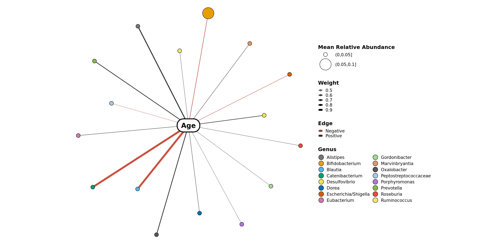

Examples used in this vignette will use the GlobalPatterns dataset from phyloseq.
library(phyloseq)
data(GlobalPatterns)co_occurrence_network
Create a ggplot object of the co-occurrence network.
Usage
co_occurrence_network(phyloseq_obj, treatment = NULL, subset = NULL, co_occurrence_table = NULL, classification = NULL, node_colors = 'default', cluster = FALSE, cluster_colors = 'default', buffer = 0.5)
Arguments
| Call | Description |
|---|---|
phyloseq_obj |
A phyloseq-class object. |
treatment |
Column name as a string, or vector of, in the sample_data. |
subset |
A factor within the treatment. This will remove any samples that to |
not contain this factor. This can be a vector of multiple factors to subset on. co_occurrence_table | Table of the co-occurrence of taxa/genes in the phyloseq_obj, computed using co_occurrence(). If no table is given, it will be computed with the phyloseq_obj, using the given treatment and p = 0.05 with a rho cut-off of 0.8. classification | Column name as a string or numeric in the tax_table for the factor to use for node colors. node_colors | Name of a color set from the RColorBrewer package or a vector palete of R-accepted colors. cluster | if TRUE, will use igraph’s cluster_fast_greedy method. Alternatively, you may pass a vector of cluster assignments with order corresponding to the order of the taxa_names in the phyloseq_obj. cluster_colors | Name of a color set from the RColorBrewer package or a vector palete of R-accepted colors. buffer | Amount of space beyond the points to extend the cluster (aesthetic argument).
Examples This sample set is too small to get any meaningful co-occurrence.
filtered_obj <- conglomerate_taxa(GlobalPatterns, "Phylum")
co_occurrence_network(filtered_obj, treatment = "SampleType",
classification = 'Phylum')
network_layout_ps
Create an layout_igraph object of the co-occurrence from a phyloseq object. This can be input into the co_occurrence_network function, or used for other network creating scripts. The purpose is to be able to create reproducible and comparable graphics.
Usage
network_layout_ps(phyloseq_obj, treatment = NULL, subset = NULL, co_occurrence_table = NULL, algorithm = 'fr')
Arguments
| Call | Description |
|---|---|
phyloseq_obj |
A phyloseq-class object. |
treatment |
Column name as a string, or vector of, in the sample_data. |
subset |
A factor within the treatment. This will remove any samples that to |
not contain this factor. This can be a vector of multiple factors to subset on. co_occurrence_table | Table of the co-occurrence of taxa/genes in the phyloseq_obj, computed using co_occurrence(). If no table is given, it will be computed with the phyloseq_obj, using the given treatment and p = 0.05 with a rho cut-off of 0.8. algorithm | Supported igraph::layout_ algorithm.
Examples
filtered_obj <- conglomerate_taxa(GlobalPatterns, "Phylum")
network_layout_ps(filtered_obj, treatment = "SampleType", algorithm = 'kk')network_ps
Create an layout_igraph object of the co-occurrence from a phyloseq object. This can be input into the co_occurrence_network function, or used for other network creating scripts. The purpose is to be able to create reproducible and comparable graphics.
Usage rnetwork_ps(phyloseq_obj, treatment = NULL, subset = NULL, co_occurrence_table = NULL, rho = 0.6)
Arguments
| Call | Description |
|---|---|
phyloseq_obj |
A phyloseq-class object. |
treatment |
Column name as a string, or vector of, in the sample_data. |
subset |
A factor within the treatment. This will remove any samples that to |
not contain this factor. This can be a vector of multiple factors to subset on. co_occurrence_table | Table of the co-occurrence of taxa/genes in the phyloseq_obj, computed using co_occurrence(). If no table is given, it will be computed with the phyloseq_obj, using the given treatment and p = 0.05 with a rho cut-off of 0.8. rho | Cutoffs to use to subset the correlation_table by correlation values.
Examples
filtered_obj <- conglomerate_taxa(GlobalPatterns, "Phylum")
network_ps(filtered_obj, treatment = "SampleType", rho = 0.6)## IGRAPH 87d181c UN-- 50 165 --
## + attr: name (v/c), Kingdom (v/c), Phylum (v/c), Mean Relative
## | Abundance (v/c), Treatment (e/c), rho (e/n), p (e/n), Weight (e/n),
## | Edge (e/c)
## + edges from 87d181c (vertex names):
## [1] SBR1093 --ZB2 SBR1093 --Synergistetes
## [3] GOUTA4 --OP8 GOUTA4 --GN04
## [5] GOUTA4 --SR1 OP8 --GN04
## [7] OP8 --SR1 Hyd24-12 --OP11
## [9] GN04 --SR1 ZB2 --Synergistetes
## [11] Euryarchaeota --Chlorobi Euryarchaeota --Chloroflexi
## + ... omitted several edgesvariable_correlation_network
Create a network ggplot object of the correlation of taxa and sample variables from a phyloseq object. This may also be refered to as a bipartite graph. Function from the phylosmith-package.
Usage
variable_correlation_network(phyloseq_obj, variables, classification = NULL,
treatment = NULL, subset = NULL, correlation_table = NULL, method = 'spearman',
rho_threshold = c(-0.01, 0.01), p_threshold = 0.05, colors = 'default',
negative_positive_colors = c('pink1', 'gray22'))
Arguments
| Call | Description |
|---|---|
phyloseq_obj |
A phyloseq-class object. |
co_occurrence_table |
Table of the co-occurrence of taxa/genes in the phyloseq_obj, computed using co_occurrence(). If no table is given, it will be computed with the phyloseq_obj, using the given treatment and p = 0.05 with a rho cut-off of 0.8. |
variables |
Numerical factors within the in the sample_data to correlate with the abundance data. |
classification |
Column name as a string or numeric in the tax_table for the factor to conglomerate by. |
treatment |
Column name as a string, or vector of, in the sample_data. |
subset |
A factor within the treatment. This will remove any samples that to |
not contain this factor. This can be a vector of multiple factors to subset on. correlation_table | Table of the correlation of taxa/variables in the phyloseq_ob}, computed using variable_correlation. If no table is given, it will be computed with the phyloseq_obj, using the given treatment and p = 0.05. method | Which correlation method to calculate, “pearson”, “spearman”. rho_threshold | Cutoffs to use to subset the correlation_table by correlation values. p_threshold | Cutoffs to use to subset the correlation_table by singnificance values. colors | Name of a color set from the RColorBrewer package or a vector palete of R-accepted colors. negative_positive_colors | colors to use for the edges to represent negative and positive correlations. Defaul (‘pink1’, ‘gray22’)
Examples
filtered_obj <- phyloseq::subset_samples(enterotype,
!is.na(enterotype@sam_data$ClinicalStatus))
filtered_obj <- taxa_filter(filtered_obj, frequency = 0.65)
variable_correlation_network(filtered_obj, variables = 'Age',
treatment = "ClinicalStatus", subset = c("healthy", "elderly", "obese"),
classification = 'Genus', method = 'spearman')
Schuyler Smith
Ph.D. Bioinformatics and Computational Biology